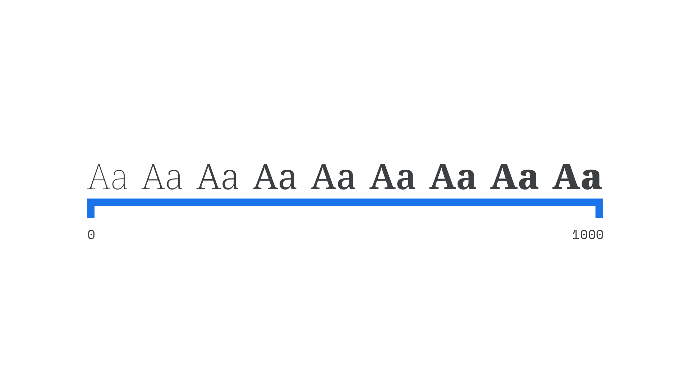

Axis (in variable fonts)
By Google Fonts Knowledge contributors · Google Fonts Knowledge.
Original article · Source on GitHub · CC BY-SA 4.0. Text, illustrations and existing credits reproduced from the licensed Knowledge repository. Open Shelf adapted the layout and links; these adaptations are also CC BY-SA 4.0. No endorsement implied.
In variable fonts, “axis” usually refers to a single aspect of a typeface’s design that can be altered by the user.

Common axes include Italic, Optical Size, Slant, Weight, and Width, all five of which are registered (defined) in the OpenType file format specification.
However, any property of a typeface’s design can be mapped to an axis—the choice is up to the type designer. Using axes is always possible in CSS via the font-variation-settings attribute, while Weight can be controlled by font-weight, Width can be controlled by font-stretch, and Optical Size is automatically applied by font-optical-sizing.